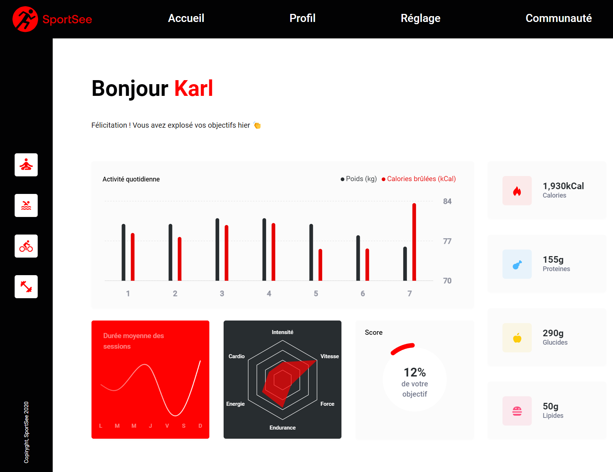

SportSee


Projet 12 du parcours "Développeur d'application - JavaScript React" chez OpenClassroom.
Description
Développez un tableau de bord d'analytics avec React

Vous travaillez en tant que développeur chez SportSee, une startup dédiée au coaching sportif. En pleine croissance, l’entreprise va aujourd’hui lancer une nouvelle version de la page profil de l’utilisateur. Cette page va notamment permettre à l’utilisateur de suivre le nombre de sessions réalisées ainsi que le nombre de calories brûlées.
Installation
Ce projet a été testé et réalisé avec la version 20.15.1 de Node.js
Partie Back
Cette partie utilise de préférence yarn, cependant, vous pouvez également le faire avec npm, ou passer par docker (pour cela je vous recommande de suivre le README du back).
Installer les dépendances :
cd back
yarn
Lancer le back :
cd back
yarn start
Partie Front
Dans un nouveal terminal :
cd front
npm install
Et lancer le projet avec :
npm run dev
Lancement
Si vous avez déjà installé les dépendances, vous pouvez directement lancer la partie back et la partie front depuit la racine du projet avec :
npm run back
et
npm run front
Documentation
La documentation a été réalisé en utilisant la syntaxe de jsdoc, permettant à la fois d'être directement lisible par Visual Studio Code, qui affiche un tooltip lorsque la souris passe sur un élément avec une documentation jsdoc, mais également de générer "automatiquement" un document html.
La documentation est accessible ici